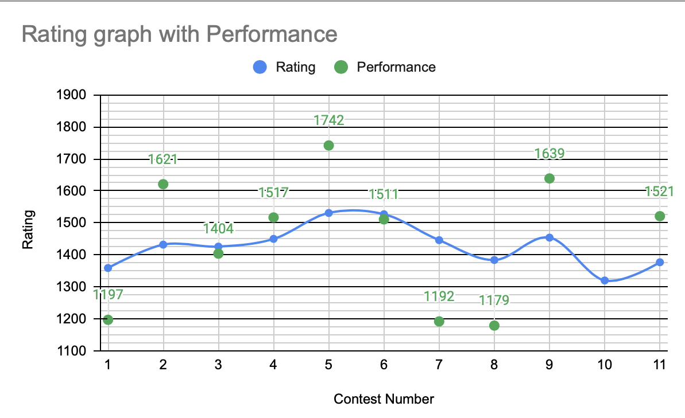
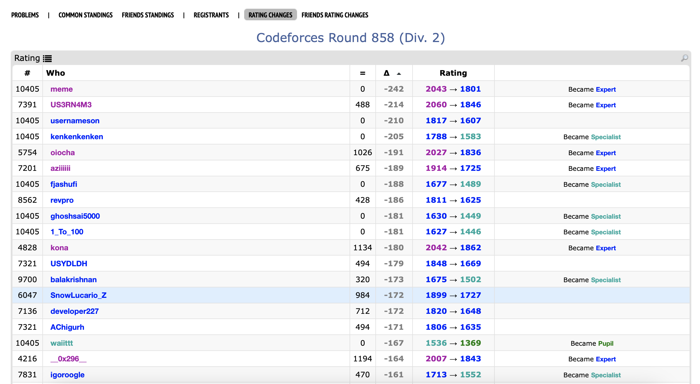

February 1st-14th
Note: Both of the logs here are being written around the end of February/start of March and are relying on personal journal logs. As of next month all new logs will be completed at or within a few days of their ending time period.
These two weeks marked the actual start of this “blog” where I log my own thoughts about recent projects I have completed, my CodeForces (mis)adventure, and other noteworthy life updates. In this case, asides from getting my first booster for the virus that has been causing a pandemic since March 2020 (yes, it has been that long), not too much event wise out of SFU has occurred in these two weeks, so I’ll just be recapping the 3 contests I took part in this two week period.
Round 770 was the first contest of the month, and without wanting to sound repetitive, I ended up solving 3 of the 6 problems somewhat quickly, which led to my official starting rating after the first 6 rated contests being 1527. For context, my initial goal for CodeForces at the start of the year was to reach Expert in 6 months, and with how close I was to reaching that goal after only 6 weeks, given that the rating floor for Expert is only 1600, shortly after this contest I readjusted this goal to be more ambitious, to reach Candidate Master by the end of the year, which requires a rating of 1900. After all, it would only take a few more contests to reach Expert anyways.
The above paragraph were my thoughts the day after the contest on February 7th. I am writing this at the beginning of March, and my rating has not crossed 1527 since then. The beginning of my fall began on February 12th with Global Round 19, a contest where I blundered the 3rd relatively easy question. In the contest, I made 5 wrong answer submissions that all failed on pretest 2 because my determinations for the setups of stones that would lead to an answer of -1 were incorrect. For example, a stone setup of [1,1,1,2,2,1,1,1,1] is possible with the following operations:
1,1,1,2,2,1,1,1,1
1,2,1,0,2,1,2,1,1
1,2,2,0,0,2,2,1,1
1,0,2,0,0,2,2,2,1
and then take each of the remaining 2 stone piles and distribute 1 stone to pile
1, and the other stone to pile n.In fact, as long as the middle n-2 piles are not all 1 stone each, then it is possible to move all the stones to piles 1 and n, assuming n is not 3. (For n = 3, the 2nd pile also must have an even number of stones.) Inexplicably, for the above example during the contest, I did not even think about anything after C being possible. My thoughts somehow revolved around counting the number of “2s” that could be used to make the odd stone piles even, but I failed to realize that in using up stones to make the odd piles have an even number of stones, I now had new piles of an even number of stones that could be used to fix remaining odd piles.
This brings me to one of things I learned involving debugging code you write on CodeForces; usually, if your program WAs on pretest 2,3,4, basically any value close to 1, it usually means that there is some sort of error within your algorithm for solving the question, where as a wrong answer on a higher pretest like pretest 8 or 9 would likely mean that your program does not look at the edge cases properly. And of course, 99% of the time, TLE just means your program is running too slowly in terms of Big-O notation, with the most common difference I’ve found being between \(O(n^2)\) and \(O(n \text{ log } n)\).
Notice how I did not mention what is the likely problem in the case of Runtime Errors. I’m not exactly sure what is the main problem in this case, but at the moment, I would guess it is due to potential edge cases triggering out of index searches, but this type of error would plague me in Round 771, two days after the previous contest. In this case, instead of just the 3rd question being a problem, the entire contest as a whole was a complete mess for me, with two avoidable incorrect submissions on Problem A, an excruciating long 35 minutes to solve Problem B, and eleven unexplainable runtime errors on Problem C.
To put into context just how badly the previous two contests went, there are two statistics I would like to share with you. The first one is simply how my rating was affected after these two weak contests. Within the 4.5 hours these two contests took place, I went from a 1527 rated Specialist to a 1384 rated Pupil. Granted, the rating system could be argued to be an arbitrary metric, but from experience, it hurts when you spend two mornings at 6:30 AM grinding away only to pretty much lose all the progress you have built up from the previous month.
The second statistic is the individual contest performance, which is a bit less obvious. To put it simply, I define performance from the contest as the rating the ELO system would expect you to be based on your results in a given contest. To put it in an example, if you performed equally as well as someone else who was rated 1500 in a contest, and the 1500-rated coder saw no change in rating after the contest, then your performance rating would be 1500. There are caveats to this method, being that there won’t always be such a person with a similar performance and 0 rating change, and the fact that CodeForces new method of rating calculation means that the rating used for calculation is different from the one displayed for the first 6 contests, but this is a relatively accurate method to finding one’s own performance to within 10-20ish points. With that said, this is a table of the 8 rated contests so far I had participated in:
| Contest | Rating | Difference | Performance |
|---|---|---|---|
| Hello 2022 | 1359 | -41 | 1197 |
| 764 | 1432 | +73 | 1593 |
| 766 | 1426 | -6 | 1404 |
| 767 | 1450 | +24 | 1517 |
| 769 | 1531 | +81 | 1738 |
| 770 | 1527 | -4 | 1511 |
| Global 19 | 1446 | -81 | 1192 |
| 771 | 1384 | -62 | 1183 |
Hello 2022 was the first contest I participated in and given the difference in performance that is understandable. However, it also puts into context just how badly the previous two went due to my ineffective debugging, an often unspoken skill within programming competitions as a whole. Thankfully, this is definitely the rock bottom in terms of rating I will reach, and surely in the next two weeks I will make a strong recovery.
In other news, immediately after Global 19, as part of my prep term for a potential Co-op Term in Fall 2022, I went through 5 hours of workshops covering resumes, cover letters, and interviews. For future SFU Co-op students I would advise against this method and just take BOL I first as those workshops ended up building on concepts that I was supposed to learn first in BOL I.
Since editing this, I did end up having a successful 8 month co-op work experience with Global Relay from September 2023 to April 2024, where much of the meaningful success and real work learning experience was mainly due to Global Relay and less SFU, even if the school took far more credit in “helping” me here than it really did. I will be fair; the internal job board for co-op with SFU is quite useful, but there are two important takeaways here for any undergraduates reading this that are considering co-op.
Even if you think you are not ready for co-op (as I felt until about 3rd year), you almost certainly are. I’d go as far to recommend taking the necessary preparation courses to be able to access the SFU job board if you wish to use it in 1st year so that you can start looking in 2nd year or earlier. If you happen to have a position in 2nd year or even 1st, it means the employer believes you are capable, and if it takes you a while, it’s alright since you already started early. In my case, I pretty much went through my co-op in 4th year with two blocks of classes before graduation, which was experience I’d be better off having earlier.
The SFU job board is only one of the options for co-op, if you can always just take the preparation courses then look outside for co-op employment. The thing is that if you have a position found outside of SFU, you are best off making absolutely NO mention that you are in the SFU co-op program if you found this position outside of their job board. Else you end up like me and this co-op position mysteriously gets added to their system, and next thing you know, you are paying $3000 to SFU to pretty much detail your experiences to them as part of their co-op program. I suppose if you have serious concerns about your co-op position and really need a third party to hold the employer accountable (obviously not in my case) or you REALLY want the co-op distinction on your degree by completing 12 months recognized by SFU, then you can let them know.
Now that I think of it the last post in this archive was written in August 2023. Probably a coincidence to be honest.
February 15th-28th
I’ve started writing this entry on March 2nd, so after this, entries will actually be written during or within a few days after the implied time period. Before I go over my bi-monthly CodeForces update, there is a much more important matter to discuss going on in the real world. For those in the future unsure of what I am referring to, on February 24th 2022, the Russian government initiated a large-scale military invasion into Ukraine. I’m not an expert on this conflict, but that does not change the fact that there is very little, if any, moral justification to Putin’s decision to invade Ukraine. It also does not help that in 2022, global military technology has become more powerful and violent, meaning that large scale conflicts have had increasing potential over the years to inflict increasingly large losses of life and suffering. From my viewpoint, the Russian oligarchs are the key perpetrators of this unnecessary war for their own self-absorbed motives, and I sincerely hope the best for the people of Ukraine in this unfortunate time.
As for something less heavy, I have created a Google Sheets page here to document my performance on every CodeForces contest I have participated in so far as well as record additional statistics reflecting my performance. As an example, here is a chart showing all 11 rated contests I took part in so far with my rating graphed, as well as a scatterplot of my ELO performance on each contest.
This sheet was a thing I kept updated up until Harbour 2023, ie. about August 2023 with this initial blog. Part of it was due to myself being tired of updating this sheet manually and instead using an extension to compute my own contest performance ratings (which is actually surprisingly simple and effectively a simple linear regression). I am aiming to have a future post reviving this Google Sheet in a more automatable form that updates via the CodeForces API on a monthly basis.

As such, we begin with the first of 3 contests I took part in during this 2 week period, being Round 772. This was a nice return to my previous contest form, as unlike the travesties that were my last 2 contests, I actually got through the first 3 problems without much difficulty. I also made some progress on Problem D, but I was unable to find the error within my solution. The basic premise of my solution is as follows:
Express each of the n integers as a binary number. From there determine the "root"
of each number as follows:
The "root" is determined as the lowest possible integer that can reach the integer
given by applying the x = 2x + 1 and x = 4x operations. It is found when you are unable to strip a '00' or '1' from the right end of the integer's binary form.
For example, the "root" of 275 is 2 because:
275 in binary is 100010011
100010011 -> 1000100 (remove '1' twice)
1000100 -> 10001 (remove '00')
10001 -> 1000 (remove '1')
1000 -> 10 (remove '00')
As such, it is possible to obtain 275 using the operations starting from 2 as follows:
2 -> 8 -> 17 -> 68 -> 137 -> 275
After finding each root of the numbers, group together numbers with the same root.
From there, only the shortest binary number of each group matters as it is able to
obtain any other value within its group. The last step is to determine how many values
is this number able to obtain. If the shortest number in this group has c digits,
then it means up to p-c digits can be appended to this number to make new values.
Let x = p-c, and f(x) be the number of possible values that can be created by adding
exactly x digits. There are two ways to attain this:
1. Have a number with x-1 digits added and append '1' to it
2. Have a number with x-2 digits added and append '00' to it
Thus, f(x) = f(x-1) + f(x-2). This clearly resembles the Fibonacci sequence, as:
2 = 1 + 1, 3 = 2 + 1, 5 = 3 + 2, 8 = 5 + 3, 13 = 8 + 5, 21 = 13 + 8...
Furthermore, given up to x digits to append, this means that the number of possible
attainable values is equal to:
f(x) + f(x-1) + f(x-2) ... + f(2) + f(1) + f(0).
The above sum actually simplifies to f(x+2)-1, and by summing up the number of
possible values from the shortest binary string for each root, we reach our answer.At the moment I am still in the process of upsolving this problem as these two weeks I had a very heavy course load upon me and did not have much free time to practise. That said, there is a flaw in this solution that results in a wrong answer on pretest 5 that I only found after looking through the forums, and finding it will be left as an exercise to the reader, with the solution and link to my upsolved solution hopefully in the second March post.
Now if you look at the graph I placed earlier in this post, you may notice that on my 10th rated contest, there is a severe drop in rating, and the green dot for my rating performance is nowhere to be found. That contest is Education Round 123, and that dip in rating is not an illusion. Remember how I had two really bad contests where my performance on each contest was comparable to someone rated 1200, and how both contests I performed about as badly as my first one, and how I had dropped from being a Specialist to a Pupil by losing 143 ELO within the span of 4.5 hours?
In this contest, my overall performance was 722 ELO.
Tragically, as of February 7th, this is not the largest rating drop I would have. It’s actually only the 6th lowest. If it’s anything I also will later have 8 contests with a rating gain exceeding +134 ELO. This contest does have the worst overall performance though being estimated by my system at 737 ELO. The slight difference is due to me using the Carrot extension for contest performance at this time which was probably not used to seeing these sort of implosions.
I wish I could be joking about the above statement, but my performance on this contest was so bad, there aren’t even CodeForces problems designed for this level of skill (or lack of in this case). The easiest problems on CodeForces are rated 800, and I somehow managed to underperform the rating of questions I literally can consistently solve in under 10 minutes each. To those readers who are genuinely trying to improve on CodeForces and are rated under 800 after 6 contests, I apologise, but in all fairness, in this contest, I literally performed at half my rating, and proceeded to lose 134 ELO points in probably the worst two hours of coding I’ve ever committed. You can even find me in the top 100 of largest rating losses for this contest.

This was the aftermath of Round 858, which is my largest (thankfully this has NOT changed) rating loss ever. Also, I do cover this contest in the March 2023 archive post. That will be fun to reflect on.
As a final way of explaining just how out of character a performance this bad was for me, a few hours after the contest, I tried explaining to my brother how badly this contest went with a League of Legends analogy. He stopped me halfway saying that such a performance would not be possible because within an hour, I would be banned off the server for quite literally being that trash.
I think it’s safe to say I like competitive programming as a sport if I’m still doing it after these implosions. Actually kind of cathartic in a way, seeing that even when I think things are going horribly as they are right now with me being sub 1900 as of writing this Feb 7th, 2026, it’s still quite the improvement over where I began. Also, the CodeForces rating system is such that recovering even from these horrible losses doesn’t take that long. (Pretty much to anyone that has recently experienced such a loss, don’t bother with alt accounts and compete on your main with dignity. ;) )
You might think I’m being too hard on myself, and in fairness, the last sentence in that rant paragraph was intended to be a joke, even though it didn’t really work out imo. But what question was it you ask, that caused this insanity? Turns out, Problem B was the travesty that destroyed me. It’s a very simple problem, and this was my 2nd attempt on it, submitted 25 minutes into the contest:
import sys
"""
1423
4123
1432
4132
"""
for i in range(int(sys.stdin.readline())):
n = int(sys.stdin.readline())
a = 0
if n == 3:
print("2 3 1")
print("1 3 2")
print("3 1 2")
elif n == 4:
print("1 4 2 3")
print("1 4 3 2")
print("4 3 2 1")
print("4 1 3 2")
elif n == 5:
print("5 1 4 2 3")
print("5 1 4 3 2")
print("5 4 3 2 1")
print("5 4 1 3 2")
else:
pairs = n//2
for j in range(n):
a = j
for k in range(pairs):
if a % 2 == 1: #reverse order
print(n-k,k+1,end=" ")
else:
print(k+1,n-k,end=" ")
a = a//2
if n % 2 == 1: print(n//2+1,end="")
print()Basically, I had a solution that could always print n proper permutations of length n for every value of n except for a few edge cases with small n values, so I just hard coded in the edge cases for n = 3,4, and 5. Now lets look at the second line of the problem statement again:
Your task is for a given number n print n **distinct** anti-Fibonacci permutations of length n.Do you see the problem with the code yet? Let me emphasise the important part:
**n distinct anti-Fibonacci permutations of length n**By now you should be able to see it. If you still cannot find the error, don’t worry, because it took me NINE attempts and 106 MINUTES to solve this question. And in SEVEN of those attempts I did not notice this error.
Look at the solution I hard-coded in for n = 5.
There’s only 4 print statements there, meaning I gave 4 anti-Fibonacci permutations of length 5. The question asked for n = 5, meaning I should give 5 distinct anti-Fibonacci permutations of length 5.
I literally lost 134 ELO in a contest because I was unable to count to five.
Let that sink in for a moment. Part of this is clearly a problem with my debugging methods, as since the program failed so many times on the second pretest, it likely meant there was something clearly wrong with my solution method as a whole. However, it took nearly 1.5 hours for me to realize the error with my solution method was that in one of my hard-coded solutions, I failed at a task that unironically, literal babies are capable of doing: counting to five. Usually when I fail in a contest, there is a lesson to be taken, but this isn’t the case. I really don’t care what your rating is on CodeForces, or what really easy question you screwed up, I seriously doubt you can say that you not just screwed up at a “mathematical concept” that is taught at an age where most people are still in diapers, but then proceeded to not notice this mistake for EIGHTY minutes straight.
That paragraph really was cathartic for me. I’m writing the second half of this entry the day after I went on a full blown rant last night, and it just shows the unspoken importance of being able to debug code in programming contests. While I did eventually get over this pathetic attempt at this contest, it took me a while to do so. In fact, after the contest, I was livid to the point that I entered Round 773 pretty much solely out of spite. This does not sound like a big deal until you realize that this contest ran from 2:10AM to 4:10AM. Most contests start at 6:35AM in my timezone, which is still manageable, but for this contest, I forced myself to bed at 7:30PM in an attempt to shift my own body clock in preparation for this contest. Needless to say, my body clock did not adjust to this sudden 3 hour shift in bedtime schedule, but despite this, I did surprisingly well on this contest and still managed to finish the first 3 questions relatively quickly. That said, I strongly recommend against trying to write coding contests at 2 in the morning, as the only reason it was possible for me that one time was because I had the luxury of taking this contest during SFU’s Reading Week, meaning I had several days afterwards to fix my sleep schedule.
That concludes the recap of the previous two weeks on CodeForces. February as a whole shows that within programming contests, many people when asked how to improve, will likely mention learning data structures or algorithms for certain types of questions, but it is very rare that anyone mentions just how important debugging can be, as it can be the difference between a poor contest and a contest that starts off badly, but ends up being okay. For further detailed statistics on my CodeForces journey it will be best to refer to the Google Sheets page, as there I will also be writing general notes on my thoughts after each contest, while this blog will focus more on my specific approaches to certain questions that are either important overall or played a critical role within the contest for myself.
It will be unlikely that I’ll be participating in a CodeForces contest in the next two weeks, as I still have a significant workload from SFU and the only contest on the site that does not overlap with my class times starts on Sunday at 2AM. However, this Saturday I’ll be part of an SFU team writing the Division 2 ICPC Pacific Northwest Regional Contest, and it will be my first in person programming competition, as well as my first team programming competition, so instead that will be the focus of my recap in the next entry.